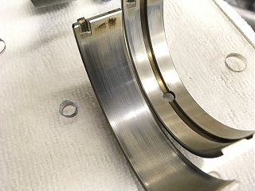

-
Does anyone have any experience reusing engine bearings, after they have been removed and inspected? Normally I would never do this, but it occurs to me that it might actually be a better solution that replacing them now-a-days, if the system is in good shape to begin with. Let me explain…
I recently investigated purchasing new bearing for another VG33E that I have, when my investigation led to me learn that we cannot buy engine bearings from Nissan anymore. Nissan used to sell 5-7 different sizes (depending on position on the crank) of main bearings and 4 different size rod bearings, allowing us to measure the crank and get dialed-in, perfectly to spec. Now, only "one size fits all" bearings are available aftermarket.
I am looking to purchase a good set of micrometers and a dial bore gauge so I can measure everything out exactly, but to properly fit the bearings as I would like, I would have to have the crank machined slightly to match. I imagine the aftermarket bearings (can still buy them from the same manufacture as made them for Nissan many years ago (Daido, NDC, GVI) will probably fall within spec, but I like to aim for them all being right in the middle of tight and loose.
I'm considering disrupting the system on a low mileage JDM engine that I bought recently, in order to inspect the rings and ring landing on the pistons for cleanliness (I pulled the heads off, had them milled, replaced the HG). The procedure of cleaning the piston tops and surrounding mess from the HG removal, requires careful attention and I would like to see how well I did for future confidence in preparing a JDM engine this way (scraping the block surfaces for new HG).
If I remove a couple pistons and disrupt the system, is it likely I'll experience the same confidence putting them back together with the same bearings (assuming the bearings are in good shape upon removal)?
Thanks!! -
I usually replace, since theyre cheap, but theres nothing wrong with reusing bearings, as long as they're not damaged.
For part of my work, I run tests and inspect diesel main and connecting rod bearings, and I've found it difficult sometimes to grade post-test results.
Throw some photos up of the bearings wiped clean. -
Thanks! Cool job you have! What do you mean it's difficult to "grade" results? Do you mean its tough to determine how much use they've had? Whether to reuse them or not? Comparing one set to another, or within each set?Originally posted by NissanXRMA View Post
Also, what is your experience with the "one-size fits all" bearings available? Ever use them in STD size? I'd like to break down most of these engines, since I have the heads off anyway, replace the bearings, hone the cylinders, and put new rings in them, all STD with no machine shop service required. This is relatively cheap and probably faster after I add up all the ridiculous amounts of time I spent carefully cleaning the short block (block deck surface and piston tops), careful to not get anything down the oil passages or cooling channels.
Do you machine your cranks to fit the new bearings, or do you find the bearings (one size fits all) fall within the specification with ease?
I'm having second thoughts about whether it would actually be better to:
1. Use NEW bearings, and have them measure out anywhere within the specification (on the low end, or the high end, but within spec) OR
2. Re-use the old bearings (assuming they are considered acceptable to use), and have them dial-ed in much better to the middle of the spec.
Here are some photos of a different set of bearings (I have not yet decided to remove the low mileage JDM engine bearings) I just removed. These bearings show some wear, but I'm not sure how much. They were in the engine when it blew a head gasket, and there were a few miles put on it after it blew up. I feel better getting new bearings for this engine, but haven't been able to get the main bearing cap to sit down in the block again to test the clearances of new bearings (using plasti-gauge - I don't yet have a good set of micrometers or a dial bore gauge).
 -
-
Oh, I think I just figured out what you mean by "grade".Originally posted by NissanXRMA View Post I was just reading the FSM again. Do you mean - determine the "size" of each bearing by color? Matching each grade number of the crank journal and the block main journal? Yeah, that is what I would like to do too, but you can't buy the bearings in the various grades anyway, can you?
I was just reading the FSM again. Do you mean - determine the "size" of each bearing by color? Matching each grade number of the crank journal and the block main journal? Yeah, that is what I would like to do too, but you can't buy the bearings in the various grades anyway, can you?
For example, one of my blocks, I have:
(Updated)
Main Journal mm, (inches)
Position #1: Grade: 5 66.657 - 62.663 (2.6243 - 2.6245)
Position #2: Grade: 1 66.654 - 66.663 (2.6242 - 2.6245)
Position #3: Grade: 1 66.654 - 66.663 (2.6242 - 2.6245)
Position #4: Grade: 1 66.654 - 66.663 (2.6242 - 2.6245)
Crank Journal mm, (inches)
Position #1: Grade: 4 62.963 - 62.969 (2.4789 - 2.4791)
Position #2: Grade: 1 62.959 - 62.967 (2.4787 - 2.4790)
Position #3: Grade: 1 62.959 - 62.967 (2.4787 - 2.4790)
Position #4: Grade: 1 62.959 - 62.967 (2.4787 - 2.4790)
Looks like I would use:
Bearings COLOR: THICKNESS mm, (inches): WIDTH mm, (inches)
Position #1: Grade: 3 Yellow: 1.831 - 1.834 (0.0721 - 0.0722): 22.4 - 22.6 (0.882 - 0.890)
Position #2: Grade: 2 Green: 1.825 - 1.829 (0.0719 - 0.0720): 18.9 - 19.1 (0.744 - 0.752)
Position #3: Grade: 2 Green: 1.825 - 1.829 (0.0719 - 0.0720): 18.9 - 19.1 (0.744 - 0.752)
Position #4: Grade: 2 Green: 1.821 - 1.825 (0.0717 - 0.0719)
I would love to match the bearings with their particular grade. Any idea if they can be purchased somewhere else, besides Nissan? I can't find them.
Last edited by spddm0n; 02-28-2017, 07:08 PM.

")
Copyright © 2006–. All rights reserved. Privacy Policy